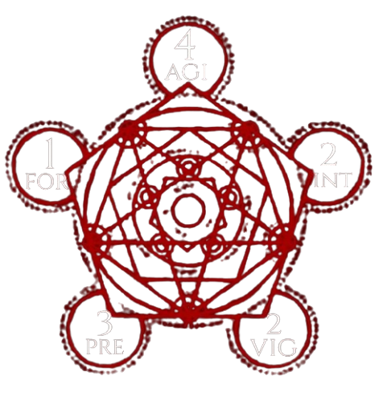
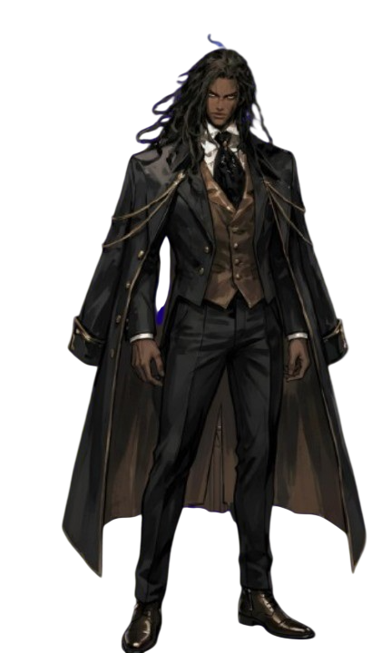
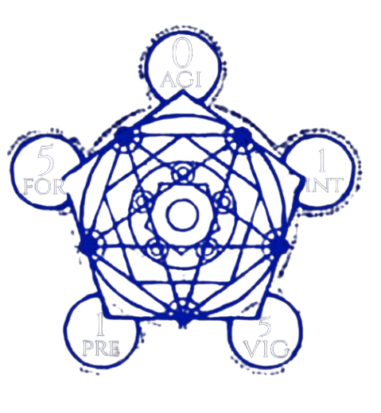
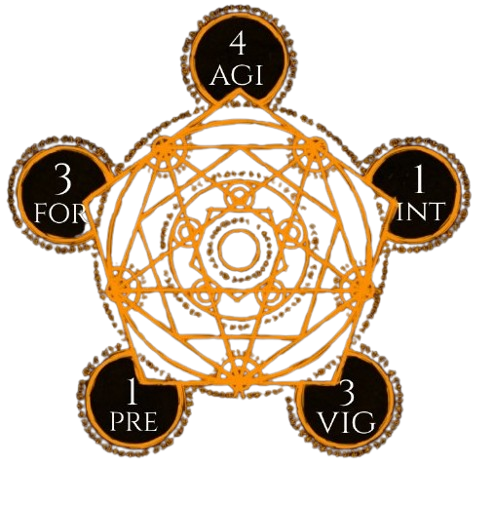
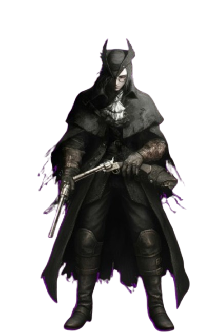
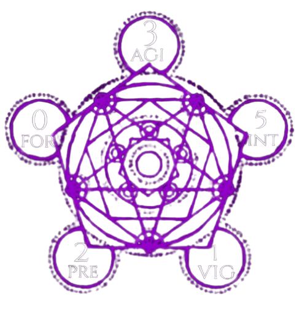
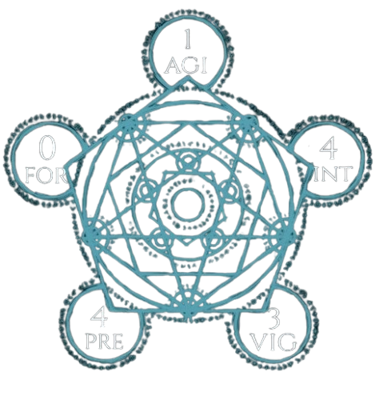
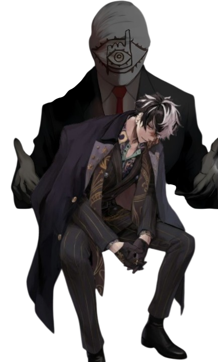
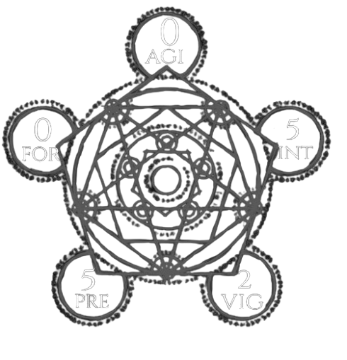

O Assobiador
Safi assobia no escuro como quem te chama pra dançar...
Mas esse é seu último convite da noite

Assobiar e Matar 4 PD
Você gasta uma rodada para assobiar e atormentar 1 inimigo, nas próximas 3 rodadas ele tem -5 na defesa e todos seus ataques contra ele tem amrgem de ameaça +5 (Vontade DT 35 Anula)
Ataque Silencioso 2 PD
Sempre q você acertar um alvo desprevinido ou flanqueado vocÊ pode gastar 2 PD para causar +4d6 de dano e deixar o alvo lento por 1 rodada
Passos Sussurantes 0 PD
Enquanto estiver furtivo você recebe deslocamento de teletransporte igual ao dobro do seu deslocamento normal(24m), mas não pode atravessar estruturas

O Presidente
Se eles querem guerra, eles vão ter...
À Pátria Amada Brasil, Xavier vai defender

Za Warudo 5 PD
Você usa uma reação ou uma ação padrão para congelar o tempo pelas próximas 2 rodadas
Golpes Desbravadores 2 PD
Toda vez que acertar um soco você pode gastar 2 PD para dar mais um, mais 3 para dar outro, 4 pra outro e assim por diante
Aniquilar e Dominar 1 PD
Toda vez que acertar um soco, você pode realizar uma manobra como ação livre com vantagem

Projeto X-Terminio
Isaque jurou caçar até o último que o havia feito sofrer
Mas quando percebeu que gostava do que fazia, a lista nunca parou de aumentar

Marca do Caçador 4 PD
Você marca 1 inimigo que possa ver como sua presa até o fim da cena você recebe +2 dados de dano da arma e +2 na margem de ameaça contra ele
Duelo de Cães 3 PD
Você faz um teste de intimidação contra um inimigo (DT 32 vont anula) se passar ele só pode realizar ações agressivas contra você e passa a ter -10 na defesa
Deixar Sangrar 2 PD
Ao acertar um ataque você pode deixar o alvo sangrando tomando 1d8 que se acumula por cada turno que não fizer um teste de fortidude e passar (DT 32)

Doutor Kassah Ador
Kassah tem o costume de dizer que uma luta nunca é entre armas e sim entre mentes

Veneno Absoluto 4 PD
Você cria um frasco de um veneno poderoso que acumula 1d10 de dano por rodada e causa um efeito a sua escolha
Doutor Absouluto 2 PD
Você tira uma condição negativa e cura um aliado em 2d10+5 e ambos ganham +5 de defesa até o fim da próxima rodada, pode gastar 1PD adicional para aumentar a cura
Gênio Absouluto 0 PD
Você não tem limite de categoria e soma seu intelecto na capacidade de carga, Além disso pode criar e reparar itens

Custodio do Umbral
Iakashi não atravessa o umbral, ele o mantém aberto
Como uma ferida que só ele sabe alimentar

Fim Inevitável 20 PD
Você cria um vácuo no espaço tempo que nas proximas 6 rodadas puxa todos os seres e objetos a sua escolha em até 90m, se um ser terminar 1 turno dentro do vácuo sofre 100 de dano de morte
Velocidade Mortal 10 PD
Você concede uma ação padrão para todos os alvos que escolher
Roubar Experiência 4 PD
1 vez por alvo na cena, você faz um teste de vontade contra o alvo (DT 35). Se ganhar pode roubar um poder aleatório até o fim da cena

O Amigo
Walker não queria um mundo sem o paranormal, ou uma paz impossível, mas sim um mundo com caos tão intenso que nem mesmo ele pudesse controlar

Controle Mental 20 PD
Você controla a mente de até 10 alvos e pode dar ordens que quiser a eles, exceto ordens suicidas. O alvo escolhido tem direito a um teste de vontade ao fim do turno para escapar (DT 37)
Ouvir Sussurros 6 PD
Escuta ecos do outro lado e pode perguntar coisas de eventos futuros, passados e atuais para eles. O mestre deve sempre te responder com sim ou não
Sair do Conforto 0 PD
Ao chegar a metade da sua vida no combate, você passa a poder conjurar 1 vez por rodada qualquer ritual do seu arsenal sem cuto de ação e sem custo de PD